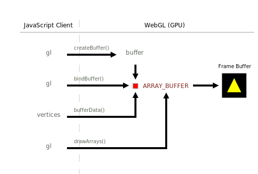

WebGL Pipelines
How WebGL Draw
In order to draw something in the canvas, we need to issue certain drawing methods. WebGL has only 3 methods dealing with drawing:
- clear
- drawArrays
- drawElements
We have encountered the clear method before, and in the following section we'll talk about drawElements. In this section, we discuss drawArrays first.
Suppose we shall draw a triangle. First, we need to provide the vertices. Second, issue the drawing method. The code is below:
var vertices = [
0.0, 0.5,
-0.5, -0.5,
0.5, -0.5
];
gl.drawArrays(gl.TRIANGLES, 0, 3); // intent: use the array data in vertices to draw a triangle
The synopsis of the drawArrays is as followed.
void drawArrays(GLenum mode, GLint first, GLsizei count)
There are 3 points in vertices array data. From the first point, which starting index is 0, fetches altogether 3 points to draw triangles. In this situation, 3 points would compose only 1 triangle.
You can see from the code that there are no connections between the drawArrays and the vertices. So how WebGL know where to get the array data from?
WebGL will rather get the array data from a buffer, than directly from the vertices we are providing. The buffer is resident in GPU, and the speed of data transmission from it is much faster than from the vertices, which is resident in JavaScript client side.
So, we need to do the following jobs:
- create a buffer (in GPU)
- copy the data from the vertices to the buffer
- tell WebGL to fetch array data from the buffer
var buffer = gl.createBuffer();
gl.bindBuffer(gl.ARRAY_BUFFER, buffer);
var vertices = [
0.0, 0.5,
-0.5, -0.5,
0.5, -0.5
];
gl.bufferData(gl.ARRAY_BUFFER, new Float32Array(vertices), gl.STATIC_DRAW);
Notice the first argument of the bufferData is gl.ARRAY_BUFFER. This is the specific buffer where the WebGL would fetch the array data. So after we created a buffer, we bind the buffer to the target gl.ARRAY_BUFFER. So the array data from the vertices would be copied to the GPU's buffer.
buffer We need to deal with the following objects:
- WebGLRenderingContext
- shaders
- program
- buffer
- vertices
- drawing functions
Coming the Shaders
Is it the whole story? Not yet.
References
Previous: Introduction | Table of Contents | Next: Drawing